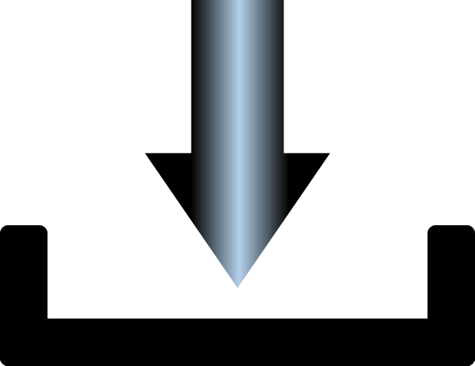

얼굴 사진을
얼굴 사진을
올려놓거나
눌러서
업로드하세요!
Loading...
AI가 당신의 외모를 분석중입니다.
나의 얼굴은 어떤 연예인과 닮았을까요? 대한민국 모든 연예인의 사진으로부터 나와 가장 닮은 연예인의 사진을 인공지능을 통해서 찾습니다. 회원가입 없이도 화면에서 바로 확인 가능합니다. 사용한 사진 데이터는 다른 용도로 사용하지 않습니다. 인공지능을 통해서 나의 외모를 테스트 해 보세요! 과연 여러분의 외모는 몇점일까요?
여자
남자
AI가 당신의 외모를 분석중입니다.